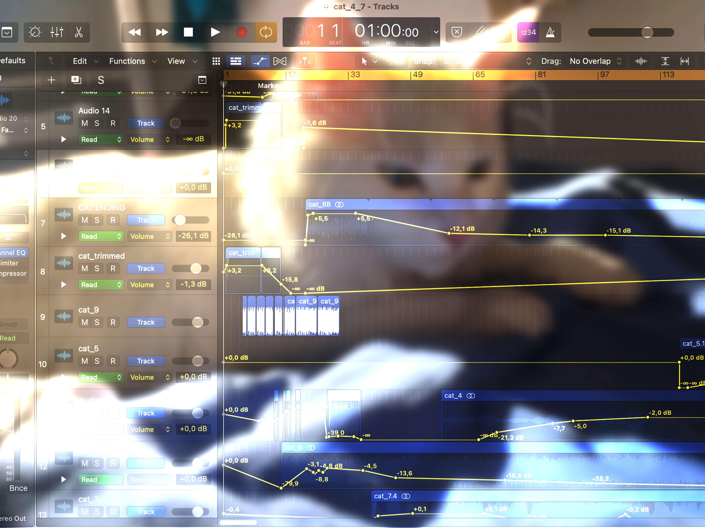

πορτφολιο

cat
Ιανουάριος 2021
Ένα ηχητικό έργο αφηρημένου χαρακτήρα, δημιουργημένο κατά τη διάρκεια πειραματισμών στα πλαίσια της τέχνης του ήχου. Αρχική ιδέα ήταν η δημιουργία μιας σύνθεσης με τη χρήση ενός και μόνο ηχητικού αντικειμένου και στη συνέχεια διαφορετικών μορφών που θα μπορούσε το ίδιο να αποκτήσει μέσα από πολλαπλές επεξεργασίες. Πρωταγωνιστής εδώ, μια γάτα και το επίμονο γουργουρητό της.
Μάθημα: «Τέχνη Ήχου».
Ιστότοπος: https://soundcloud.com/alikilg/cat_soundart